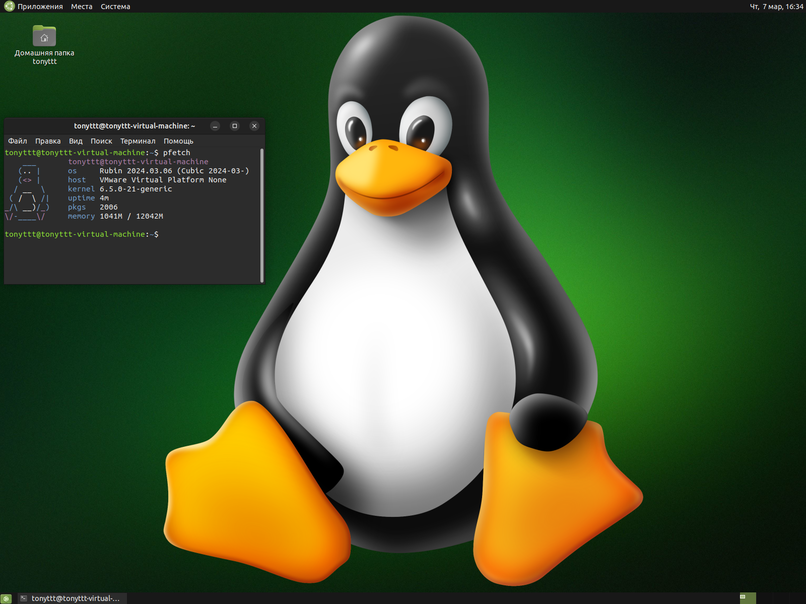

Rubin gnu/linux - это свободная, непроприетарная система с открытым исходным кодом для домашнего ПК, основанная на Ubuntu.
Дистрибутив включает в себя оболочку рабочего стола Mate, браузер Librewolf, медиапроигрыватель VLC, Центр приложений Flathub и многое другое.
